S5. Simulated interictal spikes and head motion
Milestone report. This page presents the analyses as they were first run and reported. The manuscript and its supplementary text (S1) give the current interpretation, the conditions of each result and the analyses added in the revision (among them the check of the noise model against the measured covariance, the helmet fitted at the adult's gap, the school-aged children as provisional examples and the confirmatory spike run), and they take precedence where this page differs.
NEW Interictal-spike-like events (Hunold's spike-wave waveform, three morphologies, 10-320 nAm focal dipoles and 10-mm patches) in the G2 noise model in the time domain, identical in every array. An oracle knows source and time; the practical detector scans time and a cortical dictionary with thresholds frozen on independent null data. Methods: section 9 of the methods. Every spike result on this page is from the exploratory run (18 locations per depth band, endpoint chosen after the analyses); the confirmatory run, with new locations, seeds and null data, is in the report (Section 3.6, Table 3) and S1, section G.5.
Detection (exploratory run)
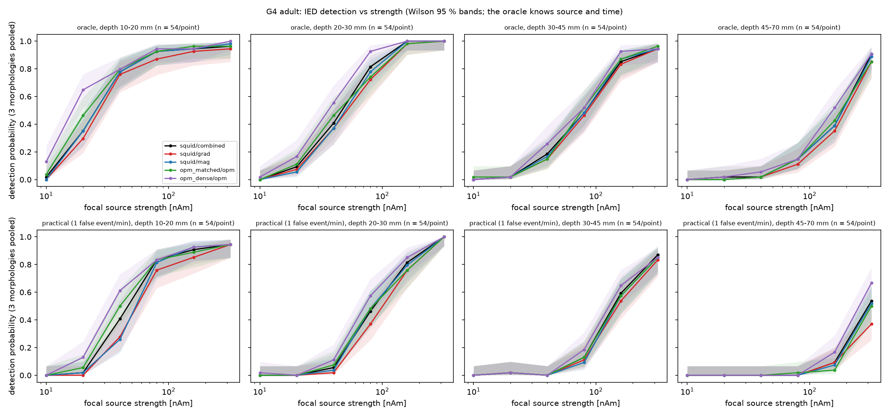
| Detector | Array | 10-20 mm | 20-30 mm | 30-45 mm | 45-70 mm |
|---|---|---|---|---|---|
| practical, 1 false event/min | Neuromag combined | 47 [36-63] | 86 [66-116] | 139 [112-204] | 302 [241->320] |
| practical, 1 false event/min | Neuromag gradiometers | 55 [44-69] | 101 [74-133] | 151 [120-216] | not reached |
| practical, 1 false event/min | Neuromag magnetometers | 54 [45-66] | 83 [65-121] | 144 [117-207] | 311 [249->320] |
| practical, 1 false event/min | OPM matched | 40 [32-58] | 84 [65-127] | 143 [113-204] | 320 [260->320] |
| practical, 1 false event/min | OPM dense | 34 [28-51] | 72 [58-103] | 128 [103-182] | 254 [207-320] |
| oracle | Neuromag combined | 25 [20-33] | 47 [35-59] | 83 [58-108] | 186 [144-216] |
| oracle | Neuromag gradiometers | 27 [21-34] | 52 [40-71] | 86 [63-115] | 196 [154-232] |
| oracle | Neuromag magnetometers | 25 [20-33] | 50 [38-64] | 83 [59-106] | 187 [143-220] |
| oracle | OPM matched | 22 [17-31] | 44 [33-66] | 77 [59-106] | 180 [136-218] |
| oracle | OPM dense | 16 [14-25] | 36 [29-48] | 76 [50-100] | 155 [120-196] |
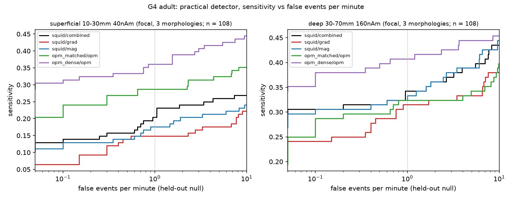
| OPM array | Detector | 10-20 mm | 20-30 mm | 30-45 mm | 45-70 mm |
|---|---|---|---|---|---|
| OPM dense | practical | 11/1 (p 0.0039) | 9/1 (p 0.014) | 5/1 (p 0.19) | 9/0 (p 0.0039) |
| OPM dense | oracle | 15/0 (p 6.1e-05) | 11/1 (p 0.0083) | 8/2 (p 0.051) | 9/5 (p 0.14) |
| OPM matched | practical | 7/4 (p 0.4) | 4/5 (p 1) | 2/5 (p 0.77) | 3/6 (p 0.4) |
| OPM matched | oracle | 9/3 (p 0.092) | 5/5 (p 1) | 5/3 (p 0.56) | 4/6 (p 0.75) |
Bounded localization
24 locations; inverse with a 1-layer BEM and a 2-mm/2-deg coregistration error (8 draws shared by all arrays; median displacement at the source 2.9 mm). Errors are measured on the MRI through the analyst's transform. No goodness-of-fit cut: whitened GOF rises as the channel count falls. Neuromag is also localized with one sensor type (its own covariance, detector and inverse; secondary), and dSPM is also computed with MNE's own mne.minimum_norm (it differs from the study's implementation in the depth weighting).
Detector thresholds (1 false event per minute, 10 min of null data) on 10 min of independent null data: false events per minute [exact 95 % interval]: Neuromag combined 1.30 [0.69-2.22]; OPM matched 1.60 [0.91-2.60]; OPM dense 1.10 [0.55-1.97]; Neuromag magnetometers 1.30 [0.69-2.22]; Neuromag gradiometers 1.10 [0.55-1.97].
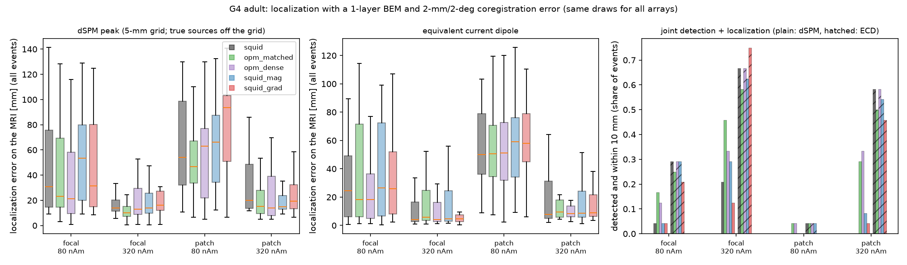
| Array | Source | Strength | Detected | ECD error, detected [mm] | dSPM error, detected [mm] | dSPM (MNE), detected [mm] | Detected + ECD <= 10 mm | Detected + dSPM <= 10 mm |
|---|---|---|---|---|---|---|---|---|
| Neuromag combined | focal | 80 nAm | 29 % | 3.7 | 14.2 | 13.8 | 29 % | 4 % |
| Neuromag combined | focal | 320 nAm | 92 % | 3.7 | 13.6 | 13.6 | 67 % | 21 % |
| Neuromag combined | patch | 80 nAm | 4 % | 9.3 | 12.4 | 12.4 | 4 % | 0 % |
| Neuromag combined | patch | 320 nAm | 83 % | 7.2 | 16.7 | 14.4 | 58 % | 0 % |
| OPM matched | focal | 80 nAm | 38 % | 6.2 | 13.3 | 10.0 | 25 % | 17 % |
| OPM matched | focal | 320 nAm | 96 % | 5.8 | 10.2 | 10.0 | 58 % | 46 % |
| OPM matched | patch | 80 nAm | 12 % | 27.0 | 20.0 | 11.5 | 4 % | 4 % |
| OPM matched | patch | 320 nAm | 79 % | 8.1 | 12.9 | 12.5 | 50 % | 29 % |
| OPM dense | focal | 80 nAm | 38 % | 5.1 | 13.8 | 12.7 | 29 % | 12 % |
| OPM dense | focal | 320 nAm | 100 % | 4.2 | 13.0 | 11.8 | 67 % | 33 % |
| OPM dense | patch | 80 nAm | 8 % | 22.4 | 10.2 | 5.6 | 4 % | 4 % |
| OPM dense | patch | 320 nAm | 88 % | 8.0 | 12.5 | 9.3 | 58 % | 33 % |
| Neuromag magnetometers | focal | 80 nAm | 29 % | 5.3 | 17.7 | 17.7 | 29 % | 4 % |
| Neuromag magnetometers | focal | 320 nAm | 92 % | 4.6 | 13.6 | 11.1 | 62 % | 29 % |
| Neuromag magnetometers | patch | 80 nAm | 4 % | 9.1 | 12.4 | 12.4 | 4 % | 0 % |
| Neuromag magnetometers | patch | 320 nAm | 83 % | 8.0 | 14.2 | 13.6 | 54 % | 8 % |
| Neuromag gradiometers | focal | 80 nAm | 25 % | 4.7 | 14.8 | 14.8 | 21 % | 4 % |
| Neuromag gradiometers | focal | 320 nAm | 92 % | 4.4 | 14.2 | 13.7 | 75 % | 12 % |
| Neuromag gradiometers | patch | 80 nAm | 0 % | - | - | - | 0 % | 0 % |
| Neuromag gradiometers | patch | 320 nAm | 67 % | 7.6 | 15.8 | 14.0 | 46 % | 4 % |
Pediatric, exploratory run: the same framework on smaller heads in the fixed helmet NEW
The adult detection and localization studies rerun unchanged (configuration, seeds, detectors, operating points) on the G3B anatomies with Neuromag at the primary placement (top contact) and the refitted OPM arrays; thresholds are calibrated on each anatomy's own null data. The templates are averages, the school-age and 2-year-size heads scaled adults and children A-C three individuals of one dataset; none is a population. Infant templates: O'Reilly et al. (2021), built from the Neurodevelopmental MRI Database (Richards et al. 2016). Children A-C: OpenNeuro ds005234 v2.2.0 (doi:10.18112/openneuro.ds005234.v2.2.0; Fadeev et al. 2024). Full tables: results/g4/G4_pediatric_report.md.
| Anatomy | Array | 10-20 mm | 20-30 mm | 30-45 mm | 45-70 mm |
|---|---|---|---|---|---|
| adult (sample subject) | OPM dense | 34 [28-51] | 72 [58-103] | 128 [103-182] | 254 [207-320] |
| adult (sample subject) | Neuromag combined | 47 [36-63] | 86 [66-116] | 139 [112-204] | 302 [241->320] |
| adult (sample subject) | OPM matched | 40 [32-58] | 84 [65-127] | 143 [113-204] | 320 [260->320] |
| school-age size (scaled adult) | OPM dense | 33 [29-44] | 85 [63-105] | 160 [124-238] | 275 [214->320] |
| school-age size (scaled adult) | Neuromag combined | 53 [40-76] | 85 [62-111] | 167 [132-243] | 299 [226->320] |
| school-age size (scaled adult) | OPM matched | 42 [33-66] | 85 [64-106] | 175 [129-267] | 285 [243->320] |
| 2-year size (scaled adult) | OPM dense | 37 [29-52] | 94 [68-126] | 171 [134-231] | 247 [202->320] |
| 2-year size (scaled adult) | Neuromag combined | 61 [50-82] | 104 [78-127] | 200 [153-250] | 273 [224->320] |
| 2-year size (scaled adult) | OPM matched | 38 [31-62] | 96 [71-116] | 186 [144-235] | 277 [238->320] |
| 2-year template | OPM dense | 30 [27-35] | 66 [58-88] | 138 [110-182] | 229 [196-279] |
| 2-year template | Neuromag combined | 43 [34-53] | 71 [61-95] | 143 [118-187] | 240 [202-292] |
| 2-year template | OPM matched | 35 [30-45] | 70 [58-92] | 150 [117-202] | 238 [205-295] |
| 18-month template | OPM dense | 27 [21-40] | 58 [43-88] | 118 [99-152] | 282 [214->320] |
| 18-month template | Neuromag combined | 36 [31-56] | 62 [53-76] | 124 [107-155] | not reached |
| 18-month template | OPM matched | 33 [26-48] | 60 [42-95] | 122 [106-151] | not reached |
| 12-month template | OPM dense | 29 [21-41] | 63 [50-93] | 119 [98-156] | 248 [215-320] |
| 12-month template | Neuromag combined | 43 [34-57] | 71 [57-98] | 131 [114-172] | 254 [220-320] |
| 12-month template | OPM matched | 33 [30-44] | 63 [53-85] | 130 [109-170] | 256 [221->320] |
| child A (7.8 y) | OPM dense | 48 [33-85] | 98 [69-175] | 188 [148-219] | not reached |
| child A (7.8 y) | Neuromag combined | 61 [48-85] | 111 [78-160] | 202 [164-234] | not reached |
| child A (7.8 y) | OPM matched | 58 [39-98] | 113 [76-184] | 193 [160-218] | not reached |
| child B (8.3 y) | OPM dense | 55 [42-72] | 122 [100-155] | 251 [196->320] | not reached |
| child B (8.3 y) | Neuromag combined | 65 [51-101] | 132 [107-181] | 245 [193-311] | not reached |
| child B (8.3 y) | OPM matched | 61 [47-83] | 131 [104-174] | 233 [178-306] | 312 [262->320] |
| child C (8.7 y) | OPM dense | 36 [28-59] | 82 [66-101] | 166 [131-226] | 320 [251->320] |
| child C (8.7 y) | Neuromag combined | 52 [39-65] | 95 [73-112] | 166 [131-230] | not reached |
| child C (8.7 y) | OPM matched | 48 [37-60] | 96 [80-111] | 167 [134-245] | not reached |
| Anatomy | 10-20 mm | 20-30 mm | 30-45 mm | 45-70 mm |
|---|---|---|---|---|
| adult (sample subject) | 11/1 (p 0.0039); ratio 1.36 [1.10-1.58] | 9/1 (p 0.014); ratio 1.20 [1.06-1.34] | 5/1 (p 0.19); ratio 1.09 [1.00-1.22] | 9/0 (p 0.0039); ratio 1.19 [1.00-open] |
| school-age size (scaled adult) | 13/0 (p 0.00024); ratio 1.60 [1.31-1.87] | 4/1 (p 0.31); ratio 1.01 [0.94-1.12] | 8/3 (p 0.24); ratio 1.04 [0.85-1.24] | 6/3 (p 0.78); ratio 1.08 [open-open] |
| 2-year size (scaled adult) | 17/0 (p 1.5e-05); ratio 1.65 [1.41-1.87] | 7/3 (p 0.24); ratio 1.11 [0.94-1.35] | 8/2 (p 0.049); ratio 1.16 [1.01-1.35] | 8/1 (p 0.031); ratio 1.11 [open-open] |
| 2-year template | 14/2 (p 0.0015); ratio 1.44 [1.20-1.65] | 6/1 (p 0.22); ratio 1.07 [0.97-1.23] | 7/3 (p 0.46); ratio 1.03 [0.93-1.15] | 7/2 (p 0.15); ratio 1.05 [0.96-1.13] |
| 18-month template | 16/0 (p 3.1e-05); ratio 1.33 [1.16-1.62] | 6/2 (p 0.19); ratio 1.05 [0.89-1.25] | 8/3 (p 0.18); ratio 1.05 [0.98-1.13] | 7/1 (p 0.047); ratio > 1.13 (Neuromag does not reach 50 %) [open-open] |
| 12-month template | 14/1 (p 0.00049); ratio 1.46 [1.21-1.84] | 9/3 (p 0.22); ratio 1.12 [1.01-1.25] | 8/1 (p 0.031); ratio 1.10 [1.03-1.23] | 3/2 (p 0.75); ratio 1.02 [0.93-open] |
| child A (7.8 y) | 11/4 (p 0.022); ratio 1.27 [0.93-1.63] | 6/5 (p 0.64); ratio 1.14 [0.93-1.44] | 5/2 (p 0.38); ratio 1.07 [0.96-1.25] | 5/0 (p 0.062); ratio neither reaches 50 % [open-open] |
| child B (8.3 y) | 12/3 (p 0.0085); ratio 1.18 [1.02-1.51] | 7/2 (p 0.12); ratio 1.08 [1.00-1.25] | 3/3 (p 1); ratio 0.97 [open-open] | 4/2 (p 0.53); ratio neither reaches 50 % [open-open] |
| child C (8.7 y) | 14/2 (p 0.0037); ratio 1.43 [1.06-1.62] | 10/2 (p 0.063); ratio 1.15 [0.98-1.33] | 2/4 (p 1); ratio 1.00 [0.93-1.09] | 6/2 (p 0.18); ratio > 1.00 (Neuromag does not reach 50 %) [open-open] |
Operating points: the frozen 1-per-minute thresholds give 0.40-1.55 false events per minute on each anatomy's held-out null data (event-level rates, distinct from the oracle's per-trial false-positive probability). With every detector set to 1 per minute on the held-out null the superficial result is unchanged (results/g4/G4_matched_rate_report.md, in the downloads). The 50 % detection level and the 1-per-minute operating point are operational study choices, not clinical standards. Failed dipole fits under declared criteria: results/g4/G4_fit_failures_report.md. Simulated IED-source recovery does not identify an epileptogenic zone or establish surgical benefit.
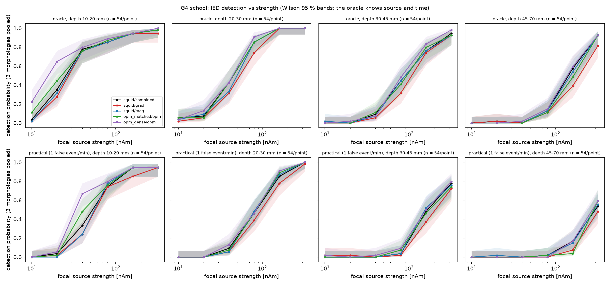
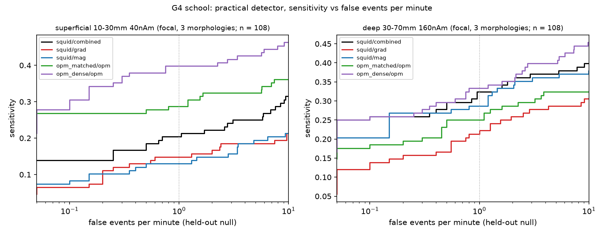
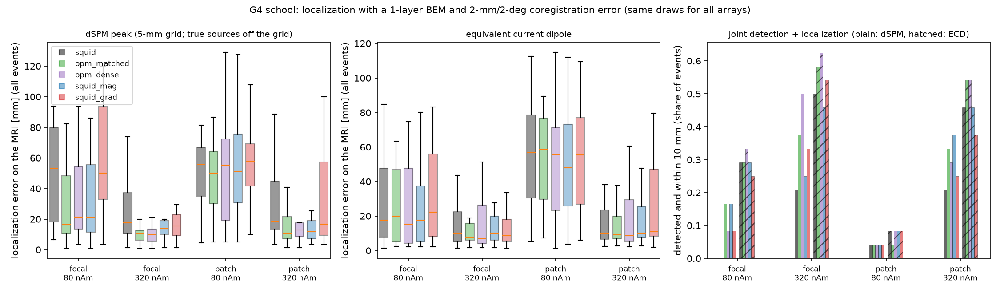
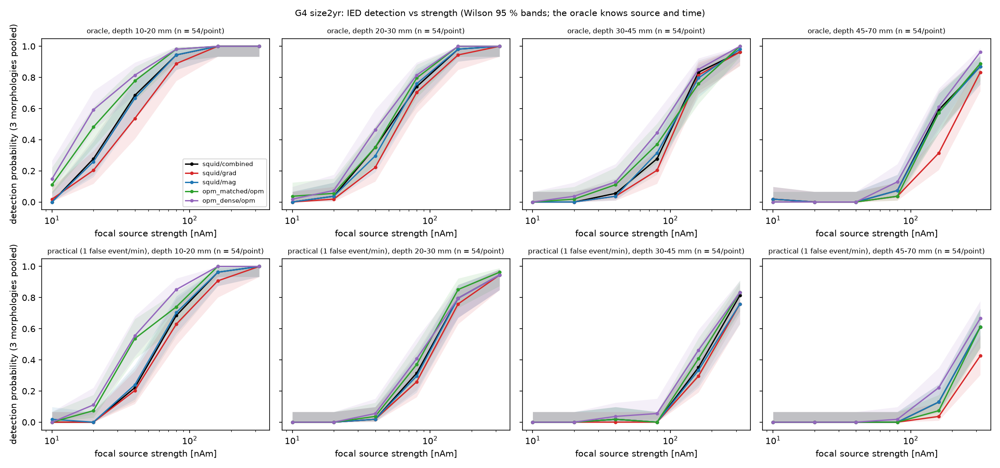
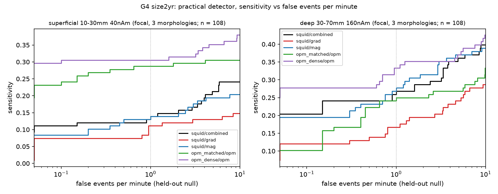
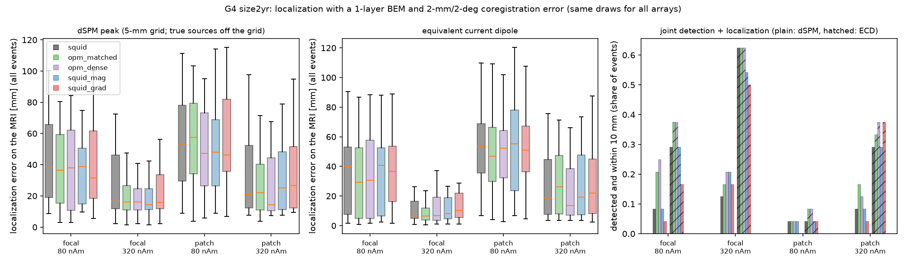
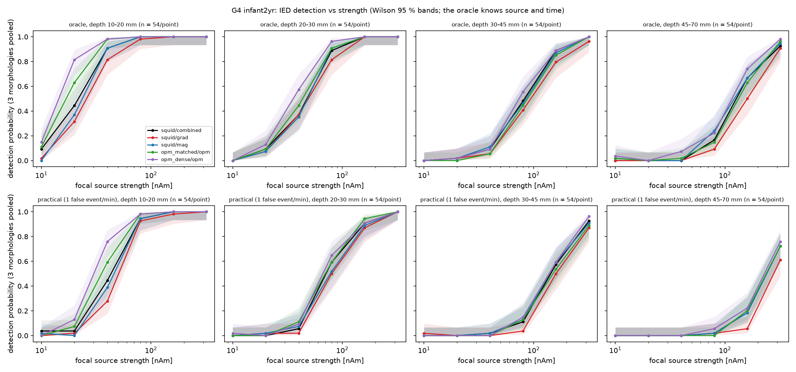
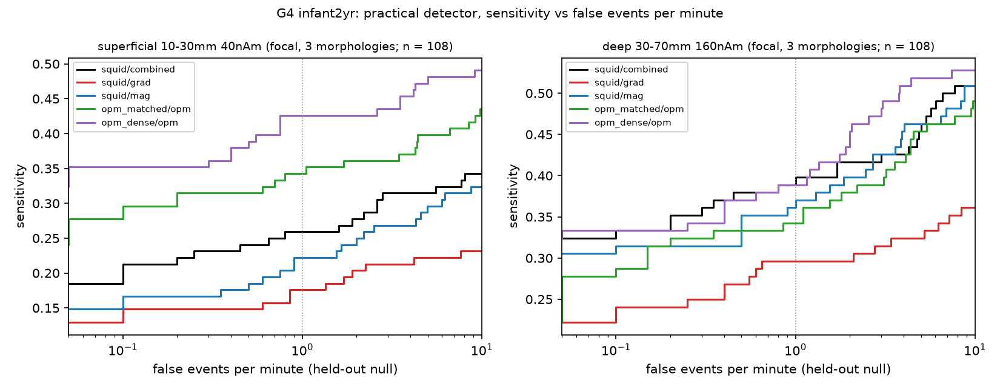
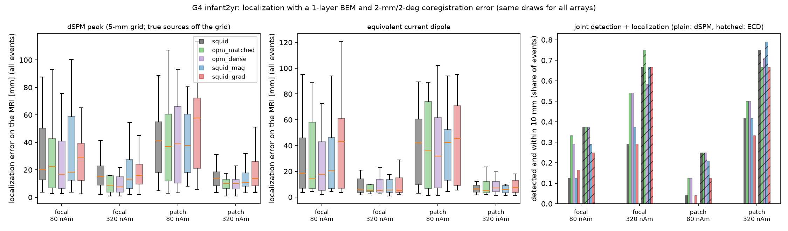
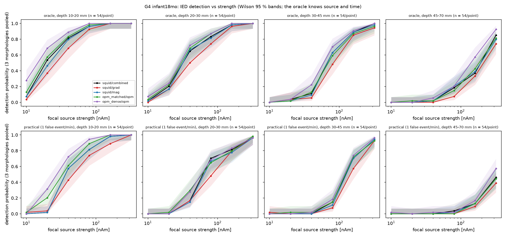
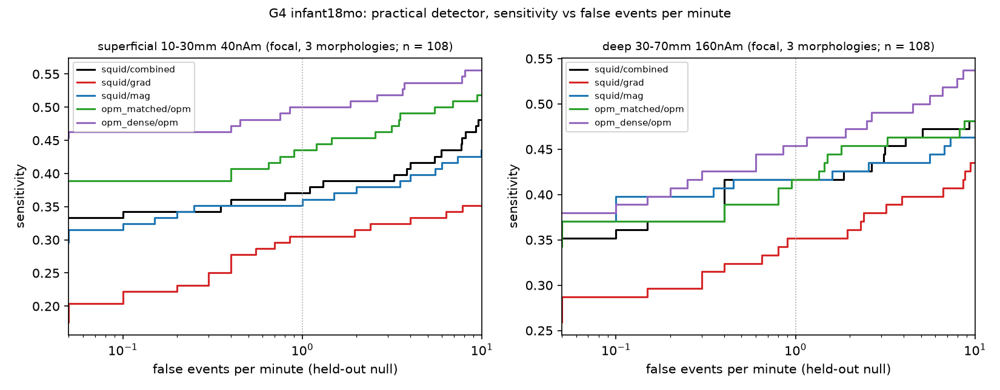
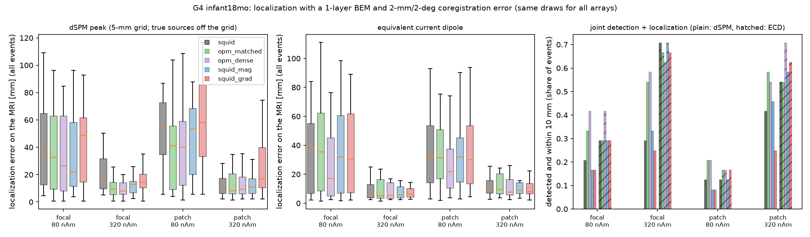
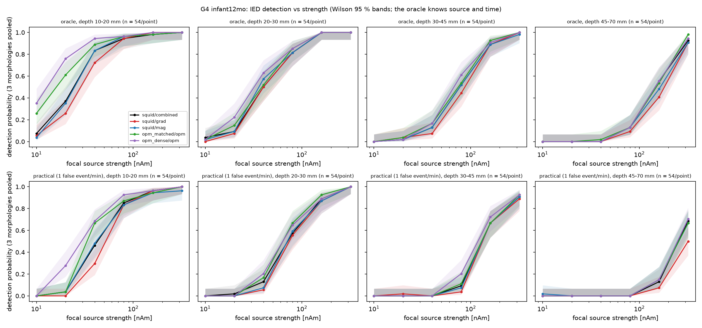
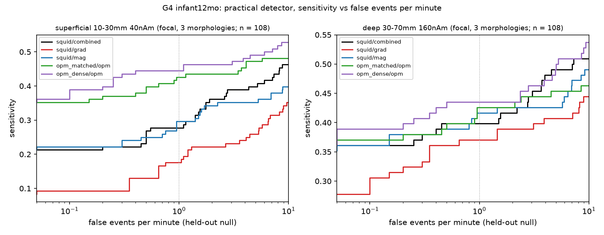
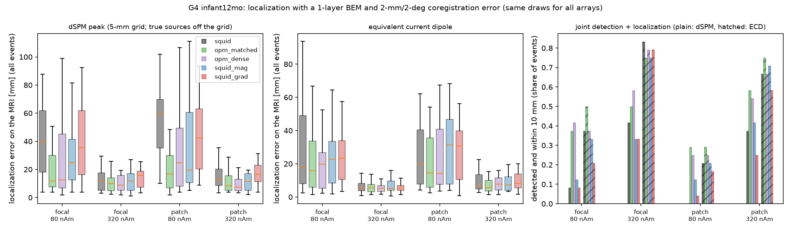
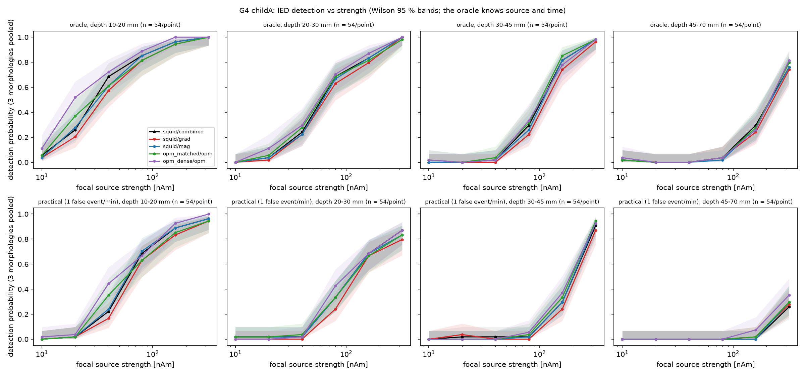
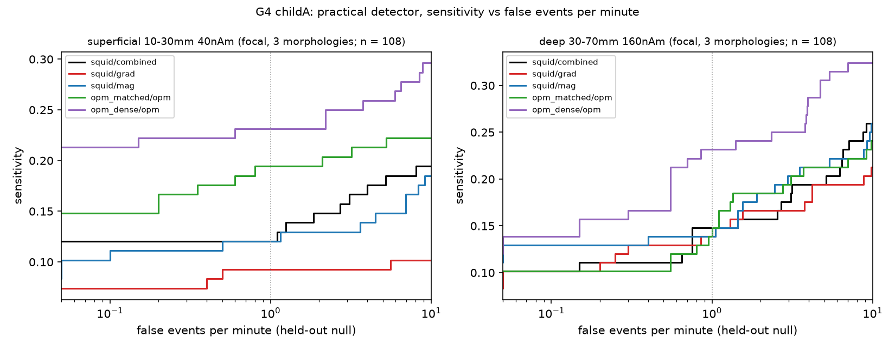
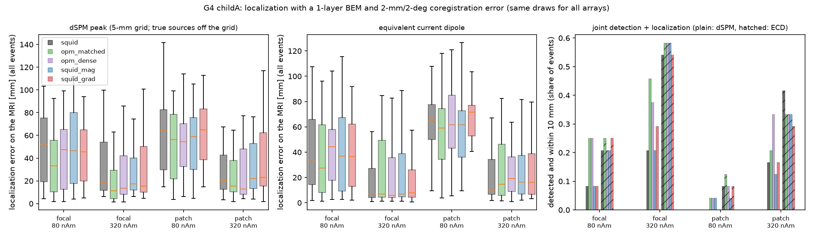
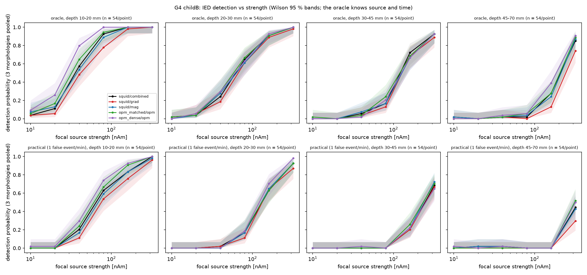
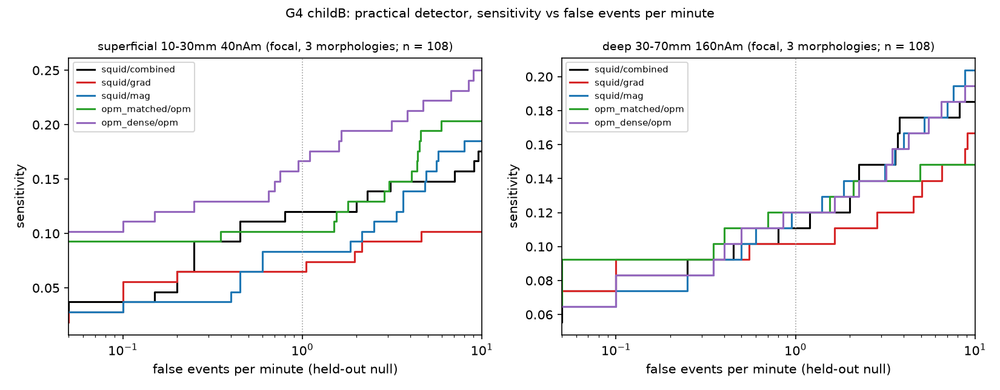
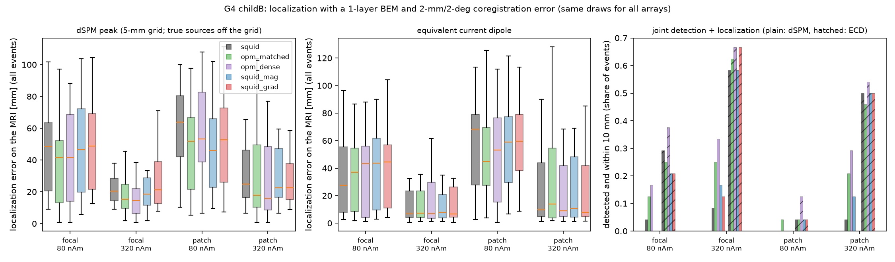
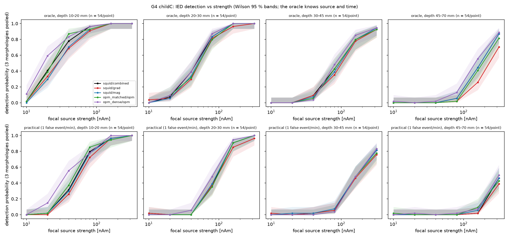
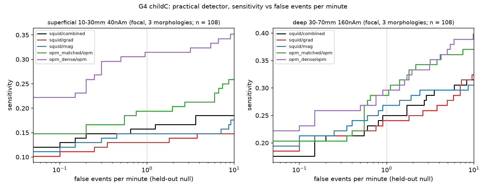
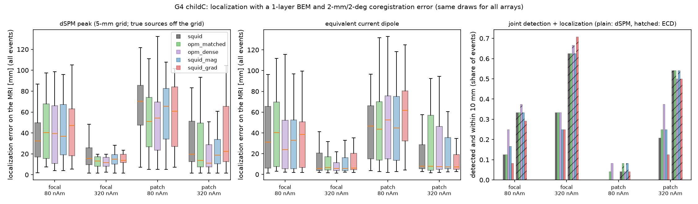
Head motion and OPM slippage (bounded extension) NEW
Static fit is studied first; this extension bounds the two motion mechanisms the static maps cannot show, on the G3B arrays and noise conventions (intrinsic + brain noise). A. A sustained displacement moves the head inside the fixed Neuromag helmet, while a head-mounted OPM array moves with the head and changes geometry only if the cap slips. 'Known': the displaced geometry is used (the ideal limit of movement compensation); 'mismatched': the template of the reference geometry is applied to the displaced data. B. In-band head rotation moves the OPM array through the static residual field of the room; the SQUIDs are fixed and see no such term. Results are per unit field and scale linearly with rotation x field. It does not establish motion robustness; sensor dynamic range, gain changes and real head-motion statistics are not modelled. Infant templates: O'Reilly et al. (2021), built from the Neurodevelopmental MRI Database (Richards et al. 2016). Methods: section 12 of the methods; all tables in the motion report.
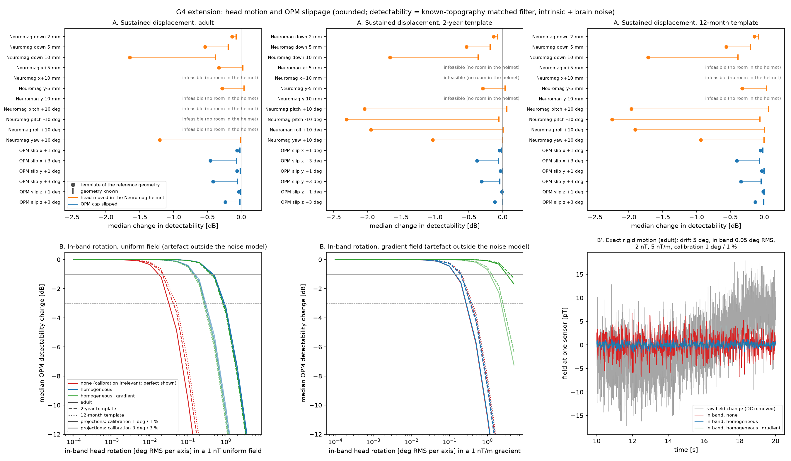
| Anatomy | System | Displacement | Known [dB] | Mismatched [dB] | Note |
|---|---|---|---|---|---|
| adult (sample subject) | Neuromag combined | down 5 mm | -0.19 | -0.53 | nearest magnetometer 23.0 mm |
| adult (sample subject) | Neuromag combined | down 10 mm | -0.38 | -1.64 | nearest magnetometer 23.2 mm |
| adult (sample subject) | Neuromag combined | x+5 mm | +0.02 | -0.33 | nearest magnetometer 18.2 mm |
| adult (sample subject) | Neuromag combined | y-5 mm | +0.04 | -0.28 | nearest magnetometer 18.7 mm |
| adult (sample subject) | Neuromag combined | pitch +10 deg | infeasible | nearest magnetometer 16.8 mm | |
| adult (sample subject) | Neuromag combined | pitch -10 deg | infeasible | nearest magnetometer 15.6 mm | |
| adult (sample subject) | Neuromag combined | yaw +10 deg | -0.00 | -1.21 | nearest magnetometer 19.9 mm |
| adult (sample subject) | OPM dense | slip x +3 deg | -0.07 | -0.46 | sensors moved 5.6 mm (median) |
| adult (sample subject) | OPM dense | slip y +3 deg | -0.06 | -0.42 | sensors moved 5.0 mm (median) |
| adult (sample subject) | OPM dense | slip z +3 deg | -0.02 | -0.23 | sensors moved 4.5 mm (median) |
| 2-year template | Neuromag combined | down 5 mm | -0.18 | -0.54 | nearest magnetometer 23.4 mm |
| 2-year template | Neuromag combined | down 10 mm | -0.36 | -1.67 | nearest magnetometer 25.5 mm |
| 2-year template | Neuromag combined | x+5 mm | infeasible | nearest magnetometer 16.7 mm | |
| 2-year template | Neuromag combined | y-5 mm | +0.04 | -0.29 | nearest magnetometer 18.9 mm |
| 2-year template | Neuromag combined | pitch +10 deg | +0.06 | -2.04 | nearest magnetometer 19.3 mm |
| 2-year template | Neuromag combined | pitch -10 deg | -0.05 | -2.31 | nearest magnetometer 19.7 mm |
| 2-year template | Neuromag combined | yaw +10 deg | -0.00 | -1.04 | nearest magnetometer 19.7 mm |
| 2-year template | OPM dense | slip x +3 deg | -0.06 | -0.38 | sensors moved 4.9 mm (median) |
| 2-year template | OPM dense | slip y +3 deg | -0.04 | -0.31 | sensors moved 4.2 mm (median) |
| 2-year template | OPM dense | slip z +3 deg | -0.00 | -0.12 | sensors moved 3.9 mm (median) |
| 12-month template | Neuromag combined | down 5 mm | -0.20 | -0.56 | nearest magnetometer 24.3 mm |
| 12-month template | Neuromag combined | down 10 mm | -0.39 | -1.72 | nearest magnetometer 28.4 mm |
| 12-month template | Neuromag combined | x+5 mm | infeasible | nearest magnetometer 17.8 mm | |
| 12-month template | Neuromag combined | y-5 mm | +0.03 | -0.33 | nearest magnetometer 18.7 mm |
| 12-month template | Neuromag combined | pitch +10 deg | +0.06 | -1.96 | nearest magnetometer 19.5 mm |
| 12-month template | Neuromag combined | pitch -10 deg | -0.06 | -2.25 | nearest magnetometer 19.3 mm |
| 12-month template | Neuromag combined | yaw +10 deg | -0.00 | -0.94 | nearest magnetometer 19.7 mm |
| 12-month template | OPM dense | slip x +3 deg | -0.06 | -0.40 | sensors moved 4.8 mm (median) |
| 12-month template | OPM dense | slip y +3 deg | -0.04 | -0.34 | sensors moved 4.2 mm (median) |
| 12-month template | OPM dense | slip z +3 deg | -0.01 | -0.13 | sensors moved 3.8 mm (median) |
| Anatomy | Correction | Calibration error (axis tilt, gain) | Unit field | 1-dB loss at [deg RMS] | OPM no longer ahead at [deg RMS] | Oracle loss at 5 deg [dB] |
|---|---|---|---|---|---|---|
| adult (sample subject) | none | 0 deg, 0 % | 1 nT | 0.0168 [0.0129-0.0192] | 0.0158 [0.0123-0.0188] | -0.02 |
| adult (sample subject) | none | 0 deg, 0 % | 1 nT/m | 0.139 [0.123-0.158] | 0.131 [0.116-0.148] | -0.05 |
| adult (sample subject) | none | 1 deg, 1 % | 1 nT | 0.0169 [0.0129-0.0192] | 0.0158 [0.0123-0.0187] | -0.02 |
| adult (sample subject) | none | 1 deg, 1 % | 1 nT/m | 0.139 [0.122-0.157] | 0.13 [0.116-0.148] | -0.05 |
| adult (sample subject) | none | 3 deg, 3 % | 1 nT | 0.0164 [0.0127-0.0189] | 0.0156 [0.0122-0.0184] | -0.02 |
| adult (sample subject) | none | 3 deg, 3 % | 1 nT/m | 0.138 [0.12-0.155] | 0.129 [0.115-0.147] | -0.04 |
| adult (sample subject) | homogeneous | 0 deg, 0 % | 1 nT | not reached [beyond 5-beyond 5] | not reached [beyond 5-beyond 5] | +0.00 |
| adult (sample subject) | homogeneous | 0 deg, 0 % | 1 nT/m | 0.142 [0.134-0.162] | 0.126 [0.119-0.142] | -0.09 |
| adult (sample subject) | homogeneous | 1 deg, 1 % | 1 nT | 0.461 [0.419-0.508] | 0.385 [0.355-0.424] | -0.01 |
| adult (sample subject) | homogeneous | 1 deg, 1 % | 1 nT/m | 0.142 [0.134-0.161] | 0.126 [0.12-0.141] | -0.09 |
| adult (sample subject) | homogeneous | 3 deg, 3 % | 1 nT | 0.153 [0.136-0.169] | 0.133 [0.122-0.142] | -0.01 |
| adult (sample subject) | homogeneous | 3 deg, 3 % | 1 nT/m | 0.14 [0.131-0.162] | 0.126 [0.119-0.141] | -0.08 |
| adult (sample subject) | homogeneous+gradient | 0 deg, 0 % | 1 nT | not reached [beyond 5-beyond 5] | not reached [beyond 5-beyond 5] | +0.00 |
| adult (sample subject) | homogeneous+gradient | 0 deg, 0 % | 1 nT/m | not reached [beyond 5-beyond 5] | not reached [beyond 5-beyond 5] | +0.00 |
| adult (sample subject) | homogeneous+gradient | 1 deg, 1 % | 1 nT | 0.418 [0.375-0.475] | 0.286 [0.269-0.303] | -0.01 |
| adult (sample subject) | homogeneous+gradient | 1 deg, 1 % | 1 nT/m | 3.17 [2.87-3.57] | 2.32 [2.18-2.44] | -0.02 |
| adult (sample subject) | homogeneous+gradient | 3 deg, 3 % | 1 nT | 0.141 [0.131-0.152] | 0.108 [0.102-0.114] | -0.01 |
| adult (sample subject) | homogeneous+gradient | 3 deg, 3 % | 1 nT/m | 1.15 [1.06-1.27] | 0.795 [0.729-0.912] | -0.02 |
| 2-year template | none | 0 deg, 0 % | 1 nT | 0.0213 [0.0177-0.0228] | 0.0264 [0.0229-0.0296] | -0.05 |
| 2-year template | none | 0 deg, 0 % | 1 nT/m | 0.202 [0.173-0.211] | 0.243 [0.227-0.257] | -0.09 |
| 2-year template | none | 1 deg, 1 % | 1 nT | 0.0213 [0.0178-0.0229] | 0.0264 [0.0229-0.0297] | -0.05 |
| 2-year template | none | 1 deg, 1 % | 1 nT/m | 0.202 [0.173-0.211] | 0.243 [0.227-0.257] | -0.09 |
| 2-year template | none | 3 deg, 3 % | 1 nT | 0.0212 [0.0178-0.0225] | 0.0263 [0.0231-0.0292] | -0.05 |
| 2-year template | none | 3 deg, 3 % | 1 nT/m | 0.195 [0.173-0.209] | 0.241 [0.225-0.254] | -0.09 |
| 2-year template | homogeneous | 0 deg, 0 % | 1 nT | not reached [beyond 5-beyond 5] | not reached [beyond 5-beyond 5] | +0.00 |
| 2-year template | homogeneous | 0 deg, 0 % | 1 nT/m | 0.198 [0.182-0.208] | 0.231 [0.222-0.244] | -0.14 |
| 2-year template | homogeneous | 1 deg, 1 % | 1 nT | 0.443 [0.393-0.504] | 0.545 [0.521-0.57] | -0.02 |
| 2-year template | homogeneous | 1 deg, 1 % | 1 nT/m | 0.198 [0.181-0.209] | 0.231 [0.221-0.245] | -0.14 |
| 2-year template | homogeneous | 3 deg, 3 % | 1 nT | 0.146 [0.132-0.161] | 0.192 [0.166-0.203] | -0.02 |
| 2-year template | homogeneous | 3 deg, 3 % | 1 nT/m | 0.194 [0.177-0.206] | 0.229 [0.22-0.242] | -0.13 |
| 2-year template | homogeneous+gradient | 0 deg, 0 % | 1 nT | not reached [beyond 5-beyond 5] | not reached [beyond 5-beyond 5] | +0.00 |
| 2-year template | homogeneous+gradient | 0 deg, 0 % | 1 nT/m | not reached [beyond 5-beyond 5] | not reached [beyond 5-beyond 5] | +0.00 |
| 2-year template | homogeneous+gradient | 1 deg, 1 % | 1 nT | 0.396 [0.367-0.478] | 0.426 [0.382-0.47] | -0.02 |
| 2-year template | homogeneous+gradient | 1 deg, 1 % | 1 nT/m | 3.9 [3.28-4.56] | 3.77 [3.36-4.13] | -0.03 |
| 2-year template | homogeneous+gradient | 3 deg, 3 % | 1 nT | 0.134 [0.122-0.148] | 0.143 [0.127-0.152] | -0.02 |
| 2-year template | homogeneous+gradient | 3 deg, 3 % | 1 nT/m | 1.27 [1.2-1.44] | 1.25 [1.18-1.35] | -0.03 |
| 12-month template | none | 0 deg, 0 % | 1 nT | 0.0228 [0.0207-0.0242] | 0.0334 [0.0274-0.0372] | -0.04 |
| 12-month template | none | 0 deg, 0 % | 1 nT/m | 0.21 [0.196-0.223] | 0.286 [0.264-0.311] | -0.09 |
| 12-month template | none | 1 deg, 1 % | 1 nT | 0.0228 [0.0207-0.0242] | 0.0335 [0.0275-0.037] | -0.04 |
| 12-month template | none | 1 deg, 1 % | 1 nT/m | 0.211 [0.196-0.224] | 0.285 [0.264-0.31] | -0.09 |
| 12-month template | none | 3 deg, 3 % | 1 nT | 0.0224 [0.0205-0.0238] | 0.0327 [0.0272-0.036] | -0.04 |
| 12-month template | none | 3 deg, 3 % | 1 nT/m | 0.208 [0.18-0.223] | 0.282 [0.259-0.31] | -0.08 |
| 12-month template | homogeneous | 0 deg, 0 % | 1 nT | not reached [beyond 5-beyond 5] | not reached [beyond 5-beyond 5] | +0.00 |
| 12-month template | homogeneous | 0 deg, 0 % | 1 nT/m | 0.207 [0.202-0.216] | 0.27 [0.259-0.285] | -0.13 |
| 12-month template | homogeneous | 1 deg, 1 % | 1 nT | 0.415 [0.373-0.475] | 0.583 [0.545-0.618] | -0.02 |
| 12-month template | homogeneous | 1 deg, 1 % | 1 nT/m | 0.207 [0.202-0.215] | 0.269 [0.258-0.286] | -0.13 |
| 12-month template | homogeneous | 3 deg, 3 % | 1 nT | 0.139 [0.123-0.152] | 0.205 [0.182-0.213] | -0.02 |
| 12-month template | homogeneous | 3 deg, 3 % | 1 nT/m | 0.206 [0.201-0.214] | 0.267 [0.257-0.282] | -0.12 |
| 12-month template | homogeneous+gradient | 0 deg, 0 % | 1 nT | not reached [beyond 5-beyond 5] | not reached [beyond 5-beyond 5] | +0.00 |
| 12-month template | homogeneous+gradient | 0 deg, 0 % | 1 nT/m | not reached [beyond 5-beyond 5] | not reached [beyond 5-beyond 5] | +0.00 |
| 12-month template | homogeneous+gradient | 1 deg, 1 % | 1 nT | 0.397 [0.336-0.438] | 0.505 [0.432-0.528] | -0.02 |
| 12-month template | homogeneous+gradient | 1 deg, 1 % | 1 nT/m | 3.89 [3.28-4.8] | 4.41 [3.9-beyond 5] | -0.03 |
| 12-month template | homogeneous+gradient | 3 deg, 3 % | 1 nT | 0.131 [0.117-0.142] | 0.161 [0.139-0.174] | -0.02 |
| 12-month template | homogeneous+gradient | 3 deg, 3 % | 1 nT/m | 1.29 [1.15-1.46] | 1.42 [1.3-1.62] | -0.03 |
B'. Exact rigid motion over 60 s (adult (sample subject); drift up to 5 deg, in-band jitter 0.05 deg RMS per axis, 2 nT and 5 nT/m): peak field change at a sensor 130 pT (median), in-band residual after the 8-term projection 24 fT RMS; per channel the exact in-band artefact is within 0.3 % of the linear prediction for 90 % of the channels (largest deviation 2.7 %).